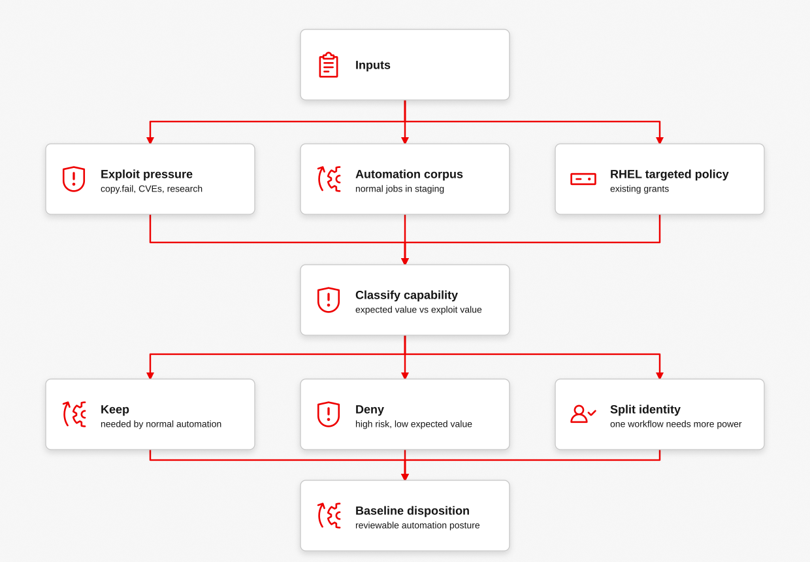
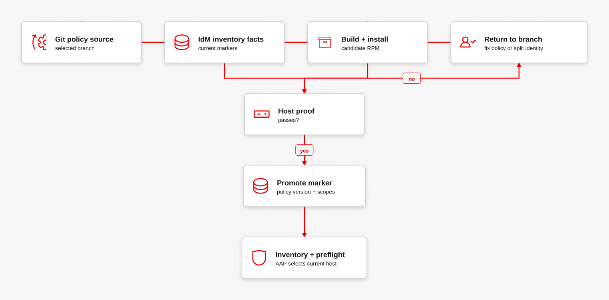
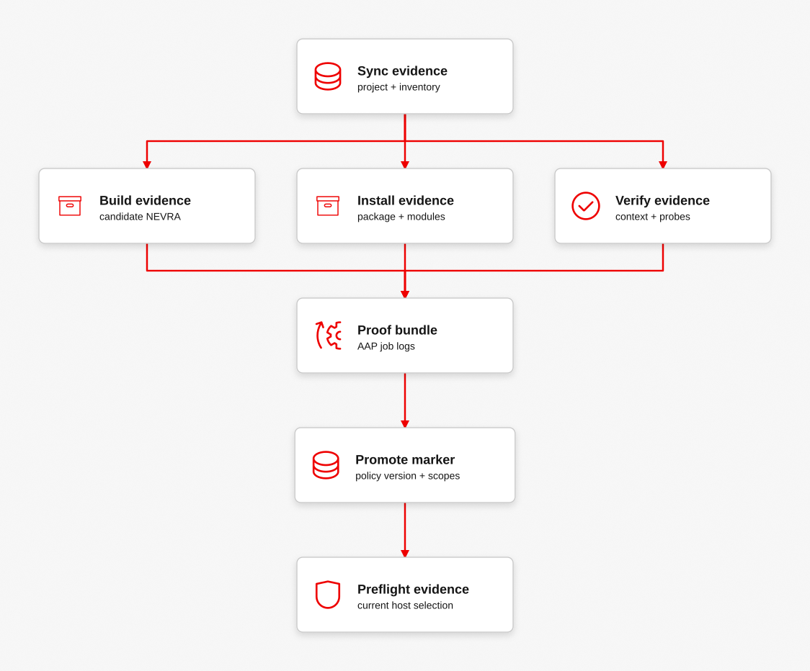
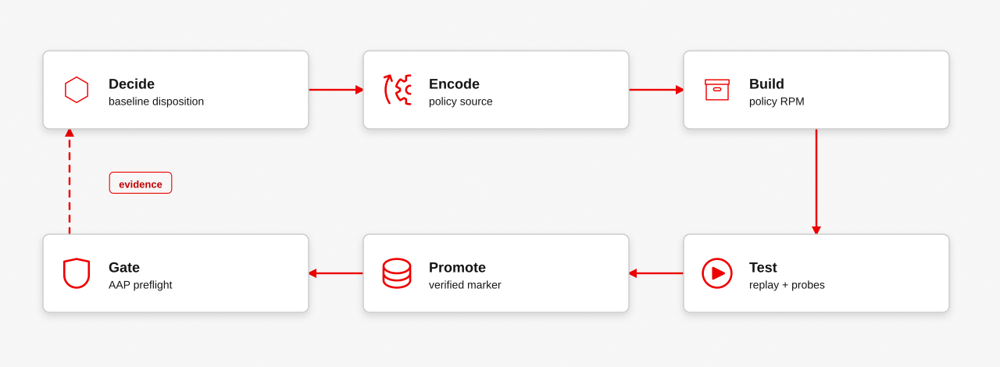

Day 2 is where Blastwall stops being a one-time CVE response and becomes an automation posture program. Operators decide what privileged automation should normally be allowed to do, encode that decision as SELinux policy source, test it against real automation, and promote the verified boundary like any other governed artifact.
The important boundary is ownership. Blastwall policy starts as operator-maintained source, becomes a versioned SELinux policy artifact, gets proven on managed hosts, and returns to AAP as suitability state. IdM records scope. eigenstate.ipa translates that state into inventory facts. AAP uses those facts before launching high-value work.
Where The Policy Comes From
The policy starts in policy/. The base blastwall.te module defines the automation SELinux user, role, and domain using the RHEL targeted policy model. The standalone CIL deny files subtract high-risk surfaces from that domain, such as AF_ALG, BPF, packet sockets, user namespace creation, io_uring, xfrm, RxRPC, and direct policy self-protection.
The source of authority is the versioned SELinux policy artifact installed on the managed host. IdM records which identities and hosts are in scope, eigenstate.ipa translates that state into inventory facts, and AAP decides whether the host is suitable before the job runs.

| Layer | What It Contributes | Where It Hands Off |
|---|---|---|
| RHEL targeted policy | The standard SELinux policy foundation and ordinary RHEL domain model. | Blastwall policy narrows the automation domain for this fleet. |
| Blastwall base policy | The named automation subject: blastwall_u, blastwall_r, and blastwall_t. | Deny scopes subtract specific risky surfaces from that subject. |
| Blastwall CIL deny scopes | Explicit subtraction of risky or low-value surfaces from the automation domain. | Staging replay proves whether normal automation still works. |
| Content pipeline | Versioned RPM build, promotion, rollback, and audit trail. | Host-local verification writes the marker AAP can consume. |
Baseline Disposition
A baseline disposition is the current answer to a narrow question: what should this class of privileged automation normally be able to do on a managed host? The answer should be specific to an automation population, not a universal claim about every process on the system.
The starting point is not a blank policy. Operators begin with the RHEL targeted policy substrate, the current Blastwall domain, and the automation they already run. Then they prune away surfaces that have high exploit value and low expected operational value for that automation path.

| Signal | Operator Question | Disposition Result |
|---|---|---|
| Known exploit pressure | Does this surface appear in current CVE or exploit-chain work? | Candidate deny scope. |
| Automation corpus | Do normal jobs actually need this capability? | Keep, deny, or split the automation identity. |
| Targeted policy grants | Is this permission inherited because it is generally useful, or because this automation needs it? | Prune broad grants when the automation path does not need them. |
| Verification output | Can the deny scope be probed safely and recorded clearly? | Promote only after proof and marker state exist. |
Use Automation As The Test Case
The most useful test corpus is the automation already running in the environment. Replay normal jobs in staging under blastwall_t, collect denials, and classify each finding before changing production posture.
A denial is not automatically a bug. It can mean the policy is too tight, the job is doing work that belongs in a different automation identity, or the policy correctly blocked behavior the job never should have needed.
| Observation | Interpretation | Next Action |
|---|---|---|
| Normal job fails on expected file, package, or service work. | The baseline is too narrow for this automation class. | Add a targeted allow or split the workflow into a more specific domain. |
| Job tries to create BPF, packet sockets, user namespaces, io_uring, xfrm state, or RxRPC sockets. | The job is crossing into a high-risk surface with little expected automation value. | Keep the deny scope and investigate why the job wanted that surface. |
| Only one job needs a broad capability. | The shared automation identity may be too broad. | Consider a separate identity, host group, or policy domain for that workflow. |
| Probe output and audit logs agree. | The policy is enforceable and explainable. | Promote the artifact and write verified marker state. |
Policy Pipeline
The policy repository should behave like any other production control. The main branch holds the master policy baseline. A new deny scope starts on a feature branch, proves that the policy still compiles, proves that normal automation still works, proves that the new surface is denied, and only then becomes a promoted artifact.
The runner can be GitHub Actions, a GitLab runner, Tekton, AAP, or a mix of them. The important part is the contract: build the RPM, run unit checks, replay the automation corpus, run safe denial probes, keep the logs, and promote only when the evidence says the baseline is still usable.
The Calabi lab now has that loop as a runnable AAP workflow. Blastwall policy pipeline starts with the synced Git project, builds a candidate blastwall-selinux RPM from policy/, installs it on the selected lab endpoint, verifies the confined context and deny probes, then updates the IdM host marker through the FreeIPA collection. After the marker moves, the workflow resyncs inventory through eigenstate.ipa and runs preflight against the promoted state.

awx workflow_job_templates launch 'Blastwall policy pipeline' \
--extra_vars '{"BLASTWALL_POLICY_VERSION":"0.5.2","BLASTWALL_POLICY_RELEASE":"1"}' \
-f json |
tee /tmp/blastwall-policy-pipeline-launch.json |
jq '{workflow_job, status, launched_by: .launched_by.name}'
workflow_id="$(jq -r '.workflow_job' /tmp/blastwall-policy-pipeline-launch.json)"
awx workflow_jobs monitor "${workflow_id}"
awx workflow_job_nodes list --workflow_job "${workflow_id}" -f json |
jq -r '.results[] | [.identifier, .summary_fields.job.id, .summary_fields.job.type, .summary_fields.job.status] | @tsv'| AAP Node | Evidence It Produces | Why It Matters |
|---|---|---|
policy_project_sync | The workflow starts from the selected Git state. | Policy is sourced from the repository, not hand-edited on a host. |
build_policy_rpm | policy_pipeline_build: passed and the candidate NEVRA. | The RPM is a versioned artifact built from checked-out policy/ source. |
install_candidate_policy_rpm | policy_pipeline_install: passed and installed package state. | The candidate artifact is on the host before verification starts. |
verify_candidate_host | Confined SELinux context and blocked probe output. | The new marker is not trusted until the host-local boundary is proven. |
promote_policy_marker | policy_pipeline_promotion: passed and the promoted marker. | The marker write uses the FreeIPA collection after host verification succeeds. |
post_promotion_preflight | Selected current hosts from the refreshed IdM inventory. | AAP consumes the promoted state before future privileged automation runs. |
| Pipeline Stage | What It Proves | Who Can Run It |
|---|---|---|
| Feature branch | The deny scope is reviewable as source, not a one-off host mutation. | GitHub Actions, GitLab CI, Tekton, or an AAP workflow triggered by SCM. |
| Build and unit checks | The reference policy module and CIL deny files compile, and neverallow guards still hold. | Any runner with the policy toolchain and RPM build environment. |
| Staging replay | Normal automation still completes under blastwall_t, or the workflow needs a split identity. | AAP workflow jobs, GitLab runners with lab access, Tekton tasks, or GitHub self-hosted runners. |
| Safe probes | The new high-risk surface is actually denied without exploiting a vulnerability. | AAP verification jobs or CI jobs that can reach a disposable managed host. |
| Promotion | The artifact, logs, marker update, and AAP preflight requirement all refer to the same policy version. | AAP for controlled rollout, or CI/CD publishing into the content repository followed by AAP verification. |

In a live enterprise shape, I would let CI own fast build and unit feedback, then let AAP own operator-visible rollout and verification. That gives developers quick branch feedback without hiding the production gate from the automation platform that will enforce it.
Run The Policy Pipeline
This tutorial path is for an operator who wants to try the Day 2 policy loop in the Calabi lab. The point is not to let a public runner reach into a private lab. The runner that talks to AAP must live where it can reach the Controller API, and AAP remains the system that performs the visible lab work.

Start by applying the Controller configuration from the Calabi AAP runbooks. That creates the project, IdM inventory source, execution environment, runtime verification workflow, and policy pipeline workflow.
cd /opt/openshift/aws-metal-openshift-demo/blastwall
ansible-playbook poc-calabi/aap/20-configure-controller.yml
ansible-playbook poc-calabi/aap/25-seed-selection-fixture.ymlThe policy pipeline is deliberately split into evidence-producing AAP nodes. The candidate RPM is installed first, then the existing managed-host verification job proves the SELinux context and deny probes. Only after that proof does the marker promotion job update IdM.

Launch the workflow with a candidate version. In the lab this can be done directly with awx from a host that can reach the Controller API, or through the policy-pipeline-smoke GitHub Actions workflow on the blastwall-lab self-hosted runner.
awx workflow_job_templates launch 'Blastwall policy pipeline' \
--extra_vars '{"BLASTWALL_POLICY_VERSION":"0.5.2","BLASTWALL_POLICY_RELEASE":"1"}' \
-f json |
tee /tmp/blastwall-policy-pipeline-launch.json |
jq '{workflow_job, status, launched_by: .launched_by.name}'
workflow_id="$(jq -r '.workflow_job' /tmp/blastwall-policy-pipeline-launch.json)"
awx workflow_jobs monitor "${workflow_id}"After the workflow finishes, read the node list and then inspect the jobs that matter. I want four signals before trusting the promotion: the build reported the candidate NEVRA, the install job confirmed the package and modules, the verification job showed the confined context and blocked probes, and the promotion job wrote the marker that inventory can consume.
awx workflow_job_nodes list --workflow_job "${workflow_id}" -f json |
tee /tmp/blastwall-policy-pipeline-nodes.json |
jq -r '.results[] | [.identifier, .summary_fields.job.id, .summary_fields.job.type, .summary_fields.job.status] | @tsv'
build_id="$(jq -r '.results[] | select(.identifier == "build_policy_rpm") | .summary_fields.job.id' /tmp/blastwall-policy-pipeline-nodes.json)"
install_id="$(jq -r '.results[] | select(.identifier == "install_candidate_policy_rpm") | .summary_fields.job.id' /tmp/blastwall-policy-pipeline-nodes.json)"
verify_id="$(jq -r '.results[] | select(.identifier == "verify_candidate_host") | .summary_fields.job.id' /tmp/blastwall-policy-pipeline-nodes.json)"
promote_id="$(jq -r '.results[] | select(.identifier == "promote_policy_marker") | .summary_fields.job.id' /tmp/blastwall-policy-pipeline-nodes.json)"
awx jobs stdout "${build_id}" | grep -E 'policy_pipeline_build|blastwall-selinux-0.5.2-1'
awx jobs stdout "${install_id}" | grep -E 'policy_pipeline_install|blastwall-selinux-0.5.2-1'
awx jobs stdout "${verify_id}" | grep -E 'blastwall_u:blastwall_r:blastwall_t:s0|BLOCKED:|SKIP:'
awx jobs stdout "${promote_id}" | grep -E 'policy_pipeline_promotion|blastwall_policy_rpm=blastwall-selinux-0.5.2-1'To turn this from a versioned rebuild into a real feature branch exercise, add or adjust a CIL deny scope under policy/, update DENY_POLICIES in policy/Makefile, add a safe probe or verification check, and use the pipeline to prove that normal automation still works. If one automation path needs the surface, split the identity or host group instead of weakening the shared baseline for every privileged job.
| Operator Step | File Or Object | Expected Evidence |
|---|---|---|
| Add candidate policy source | policy/*.cil and policy/Makefile | Policy checks and RPM build succeed from Git source. |
| Install candidate artifact | Blastwall install candidate policy RPM | Package NEVRA and SELinux modules are present on the endpoint. |
| Verify host behavior | Blastwall verify managed host | The session is in blastwall_t and safe probes are blocked or skipped for a clear platform reason. |
| Promote suitability state | Blastwall promote policy marker | FreeIPA host description records the policy version and coverage markers. |
| Gate future automation | eigenstate.ipa inventory and AAP preflight | The refreshed inventory selects the endpoint as blastwall_policy_current. |
How A New Scope Enters The Baseline
A new scope should move through the same path every time. The decision starts as an exploit signal or posture decision, becomes policy source, becomes a build artifact, gets tested locally, becomes host-marker state, and finally becomes an AAP preflight condition.

| Stage | Policy Shape | Evidence Shape |
|---|---|---|
| Source | A CIL deny scope with a matching neverallow guard and a place in DENY_POLICIES. | The policy source says exactly what is being removed from blastwall_t. |
| Probe | A safe test that exercises the surface without exploiting a vulnerability. | BLOCKED, FAIL, or SKIP output that an operator can read. |
| Verification | A managed-host check that confirms the session is in blastwall_t and the denial applies there. | Command output and audit evidence agree. |
| Marker | A verified host claim such as blastwall_policy_userns=denied. | AAP inventory can distinguish current hosts from stale hosts. |
| Promotion | A versioned policy RPM in the normal content path. | The baseline is reviewable, reversible, and tied to a specific policy version. |
Optional SELinux object classes need special care. The current io_uring scope is wrapped in a CIL optional block so older kernels can ignore an unknown class while newer kernels still enforce it. The marker state must reflect what the host can actually enforce.
When A New CVE Lands
A new CVE should not immediately become a permanent Blastwall rule. It should become a triage question: is this surface reachable from the automation domain, does normal automation need it, and can the denial be verified safely?
Dirty Frag is the current example. Public disclosure landed on May 7, 2026. The Blastwall response added two narrow policy files, policy/blastwall-xfrm-deny.cil and policy/blastwall-rxrpc-deny.cil, plus a safe probe that only checks whether the confined automation identity can open the xfrm and RxRPC entry points. The exploit mechanics are not part of the test path.

| Question | Emergency Answer | Posture Answer |
|---|---|---|
| Can the automation identity reach the vulnerable surface? | Deny quickly in staging and prove the probe fails. | Decide whether the surface should ever be available to this automation class. |
| Will normal jobs break? | Run the current automation corpus against the candidate policy. | Split identities or domains when one workflow needs a risky capability. |
| Can AAP tell which hosts are safe? | Publish marker state only after local verification. | Make the deny scope part of the baseline preflight for sensitive jobs. |
| What happens after patching? | Keep the mitigation until the fleet state is proven. | Retire only when the capability is worth restoring for automation. |
The Day 2 Loop
The operating loop is deliberately boring: decide, encode, build, test, promote, verify, mark, and gate. That loop is what turns a clever deny rule into something an enterprise automation team can live with.

The strongest Blastwall posture is not the largest deny list. It is the smallest set of capabilities that still lets the automation do its intended work, with evidence that the boundary is current before a high-value job runs.